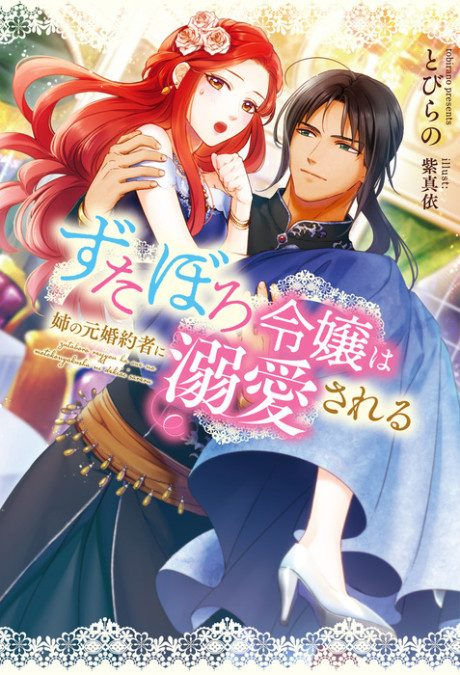

Anime
Anime
Light novel2025 · Drama, Fantasy, Romance
Betrothed to My Sister's Ex
ずたぼろ令嬢は姉の元婚約者に溺愛される
AniList7.3
Animeter—
Episodes12 ep
SourceUnclear
Is it worth pushing through?
Built from what visitors report across all 12 episodes.
Loading reports…Checking what other people said about this one.
Sign in with your email at the top of the page to add your report.
More like Betrothed to My Sister's Ex